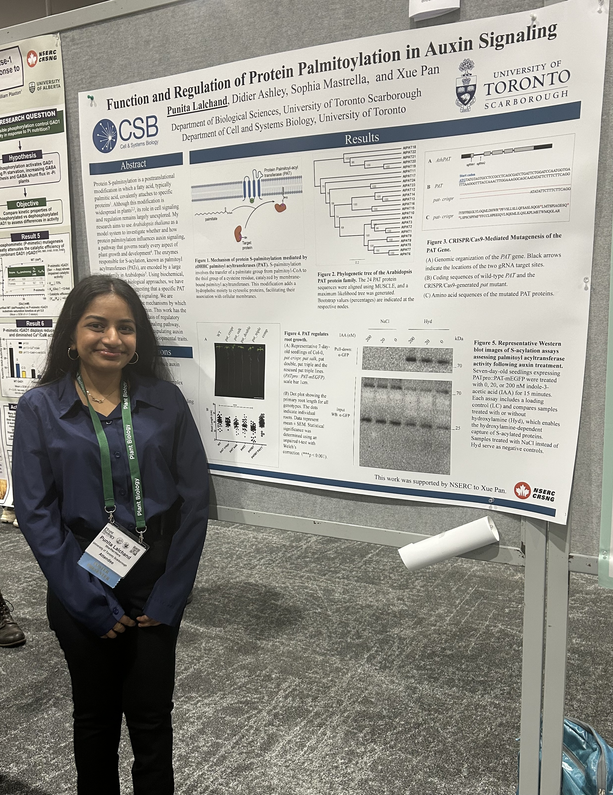
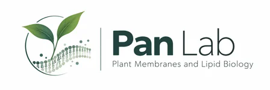
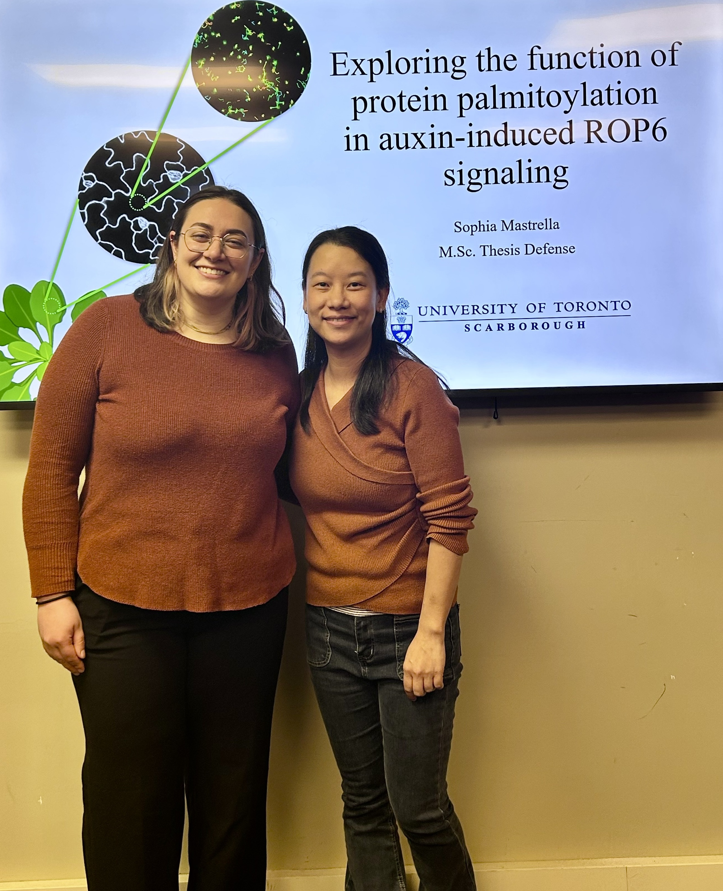
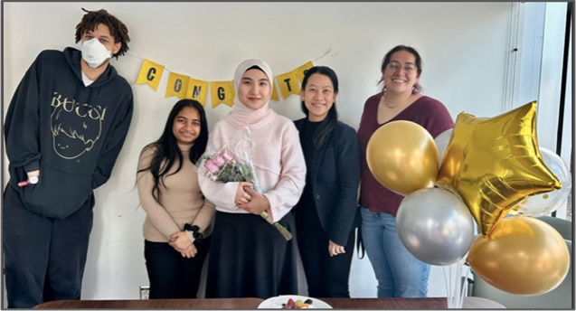

Conference
Xue and Punita in Ottawa!
Xue and Punita presented our latest work at the 2026 Plant Biology Meeting in Ottawa.

Pan Lab · Updates
Research highlights, publications, student achievements, and moments from the lab.
Our study “Mutual antagonism between auxin and diacylglycerol acyltransferase 2 regulates high-temperature-induced hypocotyl elongation” is now online. It shows how auxin and DGAT2 push against each other to shape how plants grow in the heat. Huge congratulations to everyone involved!
Read the paperPeople & moments
Updates are listed from newest to oldest.

Conference
Xue and Punita presented our latest work at the 2026 Plant Biology Meeting in Ottawa.
Student award
Exmund Asante has won an NSERC Undergraduate Student Research Award (USRA) and is joining us for the summer.
Scholarship
Punita has been awarded a Canada Graduate Research Scholarship – Master’s (CGRS-M), one of Canada’s most competitive graduate awards. Congratulations, Punita!

Student milestone
Sophia successfully defended her MSc thesis. Congratulations on this milestone, Sophia!

Student milestone
Mohinur successfully defended her MSc thesis. Congratulations, Mohinur!
Scholarship
Punita received the Joan M. Coleman Ontario Graduate Scholarship in Science and Technology (QEII-GSST).
Presentation award
Sophia took home the first-place oral presentation award at the Canadian Society of Plant Biologists Eastern Regional Meeting 2025. Well done, Sophia!
Student award
Punita won an NSERC USRA and is spending the summer in the lab.
Publication
Our review “Biomolecular condensates at the plasma membrane: Insights into plant cell signaling” is now online. Congratulations to all involved!
Publication
“Exploring the connections between ER-based lipid metabolism and plasma membrane nanodomain signaling” is now available in New Phytologist. Congratulations to all involved!
Student award
Didier won an NSERC USRA and spent the summer with us.
Have a publication, award, conference update, or lab photo to share? Contact Xue Pan.